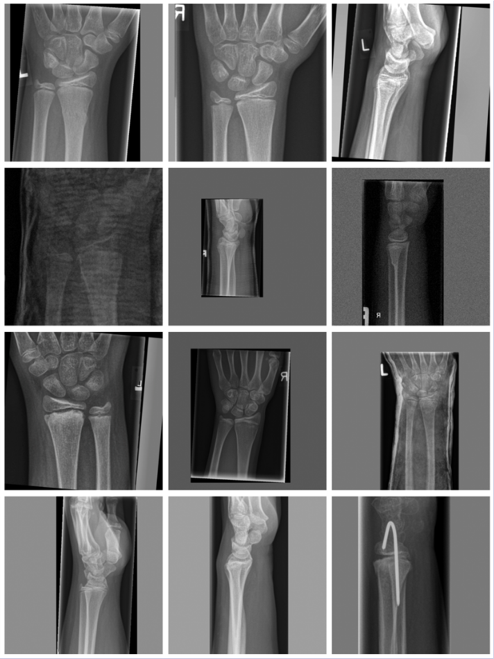

Bone Fracture Detection
Can you detect fractures better than AI?
Can you detect fractures better than AI?
Bone fractures are one of the most common injuries in emergency medicine. Fast and accurate diagnosis is critical, as delayed or incorrect interpretation of X-rays can lead to improper treatment, long-term complications, and increased recovery time.
Artificial intelligence models can assist radiologists by analyzing X-ray images within seconds. They highlight potential fracture regions and support decision-making, reducing human error and improving diagnostic consistency across different cases.
The system reduces the workload of medical professionals and speeds up the diagnostic pipeline. It improves accessibility in under-resourced healthcare systems and helps ensure that more patients receive timely and reliable medical evaluation.
Images of 6091 patients
20,327 images (16.28 GB)
Lateral + posteroanterior views
Bounding boxes placed by radiologists
9 fracture classes

Strength: small object detection + high recall
Key feature: unified multi-task model (detection, segmentation, classification, pose estimation, OBB)
Optimization: real-time inference and usability
Architecture: anchor-free detection head + improved backbone
Strength: higher precision and stable bounding boxes
Key improvement: more efficient feature extraction
Performance: faster processing
Efficiency: fewer parameters → lighter model
Focus: better accuracy at higher epochs